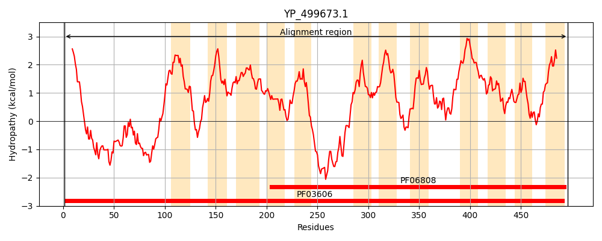
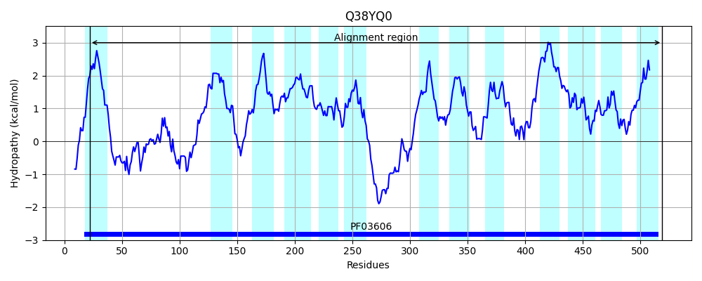
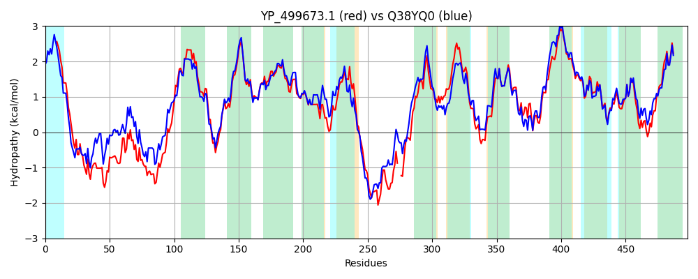

Hit Accession: Q38YQ0
Hit TCID: 2.A.118.1.7
Hit Description: gnl|BL_ORD_ID|13431 gnl|TC-DB|Q38YQ0|2.A.118.1.7 Putative transport protein OS=Lactobacillus sakei subsp. sakei (strain 23K) GN=LCA_0376 PE=4 SV=1
Mach Len: 498
e:0.000000
Query TMS Count : 12
Hit TMS Count: 13
TMS-Overlap Score: 10.850000
Predicted Substrates:CHEBI:3730;citrulline, CHEBI:7784;ornithine
BLAST Alignment:
Score: 1957 , Bit scores: 758 bits, E-value: 0.0e+00, Alignment length: 498, Percentage identity: 75
Query: 1 MILFILTVVAVIATWVIPAGAYSKLSYEPSSQELKIVNPHNQVKKVPGTQQELDKMGVKIKIEQFKSGAINKPVSIPNTYERLKQHPAGPEQITSSMVEGTIEAVDIMVFILVLGGLIGVVQASGSFESGLLALTKKTKGHEFMLIVFVSILMIIGGTLCGIEEEAVAFYPILVPIFIALGYDSIVSVGAIFLASSVGSTFSTINPFSVVIASNAAGTTFTDGLYWRIGACIVGAIFVISYLYWYCKKIKNDPKASYSYEDKDAFEQQWSVLKD--DDSAHFTLRKKIILTLFVLPFPIMVWGVMTQGWWFPVMASAFLIFTIIIMFIAGTGKSGLGEKGTVDAFVNGASSLVGVSLIIGLARGINLVLNEGMISDTILHFSSSLVQHMSGPLFIIVLLFIFFCLGFIVPSSSGLAVLSMPIFAPLADTVGIPRFVIVTTYQFGQYAMLFLAPTGLVMATLQMLNMRYSHWFRFVWPVVAFVLIFGGGVLITQVLIYS 496
+ILFILTVVAV+ATWV+P+G+Y+KLSY+ S +L + P QV+KVP TQ LD++GVKIKI QF SG+IN VSIPNTY+RLKQ PA + +SMV GT+EAVDIMVFILVLGGLIG V+ASG+FESGLLALTKKTKGHEF+LI FV+ILM++GGTLCGIEEEAVAFYPILVP+FIA+GYDSIV VGAIFLASS+G+TFSTINPFSVVIASNAAG +FT+GL WR+G CIVGAIFVI YLY Y KK+K DP SYSYED DAF++ W++ + A FT RKK+IL LFV+ FPIMVWGVM+QGWWFP MA++FL F IIIMF+ TG G+GEKG +DAFVNGASSLVGVSLIIGLARGINL++NEGMISDT+L +SSSLV H+SGP+FI+++L IFF LGFIVPSSSGLAVLSMPI APLADTV IPRFV+VT YQFGQYAMLFLAPTGLVMATLQML+++Y+HW RFVWPVVAFVL FGG +L+ QVLIYS
Sbjct: 22 VILFILTVVAVMATWVVPSGSYAKLSYDQKSTQLVVTKPSGQVEKVPATQASLDRLGVKIKISQFTSGSINAAVSIPNTYQRLKQRPASLAAVPNSMVRGTVEAVDIMVFILVLGGLIGTVKASGAFESGLLALTKKTKGHEFLLIFFVAILMVLGGTLCGIEEEAVAFYPILVPVFIAMGYDSIVCVGAIFLASSIGTTFSTINPFSVVIASNAAGISFTEGLLWRVGGCIVGAIFVIYYLYRYSKKVKADPTQSYSYEDHDAFDKMWAITSEGAQSKAVFTWRKKLILVLFVVTFPIMVWGVMSQGWWFPTMAASFLTFAIIIMFLTATGPEGIGEKGVIDAFVNGASSLVGVSLIIGLARGINLIMNEGMISDTLLQYSSSLVAHVSGPIFILIMLVIFFVLGFIVPSSSGLAVLSMPILAPLADTVNIPRFVVVTAYQFGQYAMLFLAPTGLVMATLQMLDVKYAHWLRFVWPVVAFVLTFGGAMLVLQVLIYS 519 | Protein Hydropathy Plots: |
|---|
|  |  |
Pairwise Alignment-Hydropathy Plot:
|
|---|
|  |